Como o Loon voa
Estratosfera

Situada na extremidade do espaço, entre 10 e 60 km de altitude, a estratosfera apresenta desafios únicos para a engenharia: a pressão do ar é apenas 1% da que temos no nível do mar, e essa fina atmosfera oferece menos proteção contra radiação UV e variações de temperatura dramáticas, que podem chegar a -80ºC. Ao projetar o envelope do balão cuidadosamente para resistir a essas condições, o Projeto Loon aproveita os ventos contantes da estratosfera para permanecer bem acima de fenômenos climáticos, animais e aeronaves.
Como o Loon é projetado
Envelope

A parte inflável do balão é chamada de "envelope" do balão. Um envelope bem-feito é fundamental para permitir que um balão dure cerca de 100 dias na estratosfera. Os envelopes dos balões Loon são feitos de folhas de plástico de polietileno e, quando totalmente inflados, medem quinze metros de largura por doze metros de altura. Quando um balão está pronto para ser retirado de serviço, o gás é liberado do envelope para trazê-lo para a Terra em uma descida controlada. No caso improvável de um balão cair rápido demais, um paraquedas ligado à parte superior do envelope é aberto.
Painéis solares

Todos os componentes eletrônicos do balão são alimentados por um conjunto de painéis solares. O painel é de plástico laminado flexível, suportado por uma estrutura de alumínio leve. Ele usa células solares monocristalinas de alta eficiência. O painel solar é montado em um ângulo inclinado para capturar a luz do sol de forma eficaz em dias curtos de inverno em latitudes mais altas. O painel é dividido em duas seções voltadas para direções opostas, o que permite captar energia de qualquer lado, uma vez que os balões giram com o vento. Os painéis produzem aproximadamente 100 watts de potência a pleno sol, o que é suficiente para manter os componentes eletrônicos do Loon e, ao mesmo tempo, carregar uma bateria para uso noturno. Por se mover com o vento e ser carregado pelo sol, o Projeto Loon é capaz de fornecer energia a si mesmo usando fontes totalmente renováveis.
Componentes eletrônicos

Uma pequena caixa contendo os componentes eletrônicos do balão paira sob o envelope inflado, como a cesta carregada por um balão de ar quente. Essa caixa contém placas de circuitos que controlam o sistema, as antenas de rádio para comunicação com outros balões e com antenas de internet no chão e baterias de íon de lítio para armazenar a energia solar para que os balões possam funcionar durante a noite.
Como é a conexão do Loon

Cada balão pode fornecer conectividade a uma área de aproximadamente 40 km de diâmetro no solo, usando uma tecnologia de comunicação sem fio chamada LTE. Para usar a LTE, o Projeto Loon tem parceria com empresas de telecomunicações que compartilham o espectro da rede celular para que as pessoas possam acessar a Internet em qualquer lugar, diretamente dos seus smartphones e outros dispositivos com suporte à LTE. Os balões retransmitem o tráfego sem fio dos telefones celulares e outros dispositivos de volta para a Internet global usando links de alta velocidade.
Ampliação
Neste vídeo, o Líder de Projeto Mike Cassidy nos explica o progresso que sua equipe fez na criação e gerenciamento de uma rede de balões em grande escala com intuito de com isso tornar realidade o acesso à Internet para todos.
Quer mais informações?
Saiba mais sobre como o Loon funciona na nossa página do Google+. Compartilhe suas dúvidas com #AskAway.